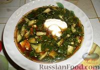
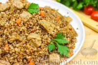
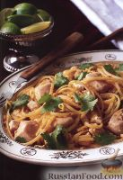
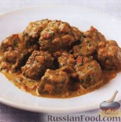
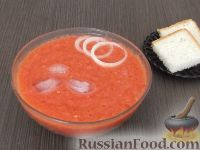

| Название блюда | Оценка (1-10) | Ссылка на рецепт | Фото блюда |
|---|---|---|---|
| Окрошка | 7 | Рецепт окрошки на квасе |  |
| Гречневая каша по-купечески | 8 | Рецепт гречки по-купечески |  |
| Пад-тай | 9 | Рецепт пад-тая |  |
| Карри с говядиной | 7 | Рецепт карри с говядиной |  |
| Гаспаччо | 4 | Рецепт гаспаччо |  |